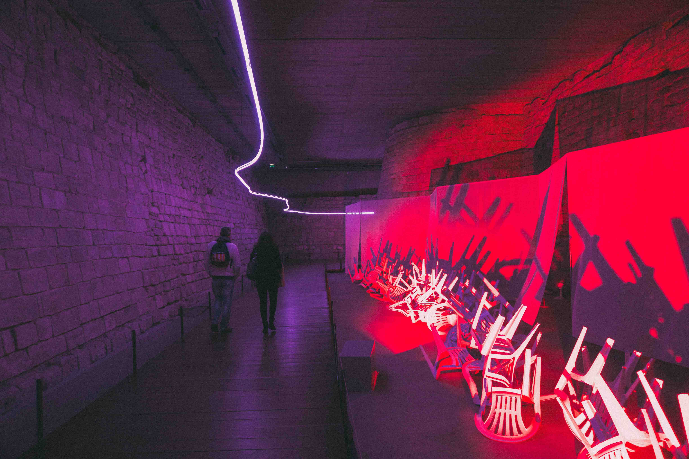
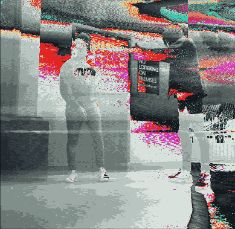
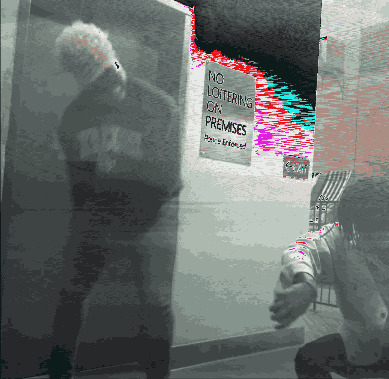
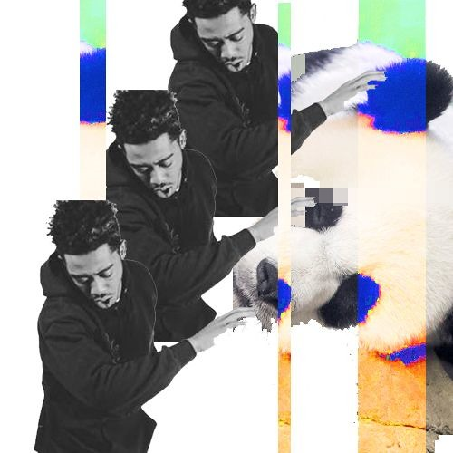

Yo Pi'erre,
let me be your intern
-
I’m Majid Breland, and I want to intern for Pi'erre Bourne/Sosshouse. I recently graduated college with a degree in Management Information Systems from McCombs School of Business at The University of Texas — the fifth best business school in the country. This has given me skill sets in everything from software development to data and financial analysis.
In addition to my formal education I am also a self-taught web developer, videographer, photographer and graphic designer. I have been shooting music videos and live recap videos for years now. I’ve also been doing graphic design in all aspects (flyers, cover art, logo design, website design) for the past few years as well.
-
-
-
-
-

-
-
-
-

-

-
 
-
-

-
- Beatstars
Software Engineer
- Dronesense
Software Engineer Intern
- Bloxmob
Software Engineer Intern
- Beatstars
-
- Analytics
- Google Analytics
- Python
- Excel
- Advertising
- Google Adwords
- Facebook Ads
- Analytics
Who I am
I do videography
and photography
and graphics
and web development
and a few other things
Why you should pick me
What differentiates me from everyone else in your inbox is that I have the creative skills necessary to execute creative visions as well as a rigorous business school education. McCombs School of Business at The University of Texas is one of the top undergraduate business schools in the nation. I say this not to flex but to show that I am an extremely hard worker and can operate in both creative and business environments. I can shoot and edit a music video just as well as I can wrangle an excel spreadsheet to create a financial model.
I also have a strong arsenal of technical skills; I am well versed in Adobe Photoshop, After Effects, Premiere, Final Cut Pro, Microsoft office, HTML/CSS, Javascript, Python, Wordpress and have recently started to learn Cinema 4D. I am passionate about making dope, engaging content on all platforms.
I am also a Virgo (September 11th). I read in your Fader interview that you get along well with Virgos because you understand what they are like without necessarily knowing them. Hiring new staff is always risky. Don’t make it riskier by hiring someone with a wack astrological sign.
I’ve been following your career for a while now and really like and respect the direction you have been going. If there is anyone that is capable of pushing the Pi’erre Bourne brand forward, it is me. I know how to work independently, but also how to function in a team environment. I have the skills, experience, knowledge, and drive to contribute to the team, and I look forward to discussing the opportunity further.
Thanks,
Majid Breland
832-334-1554
majid.breland@gmail.com
PDF of resume available here